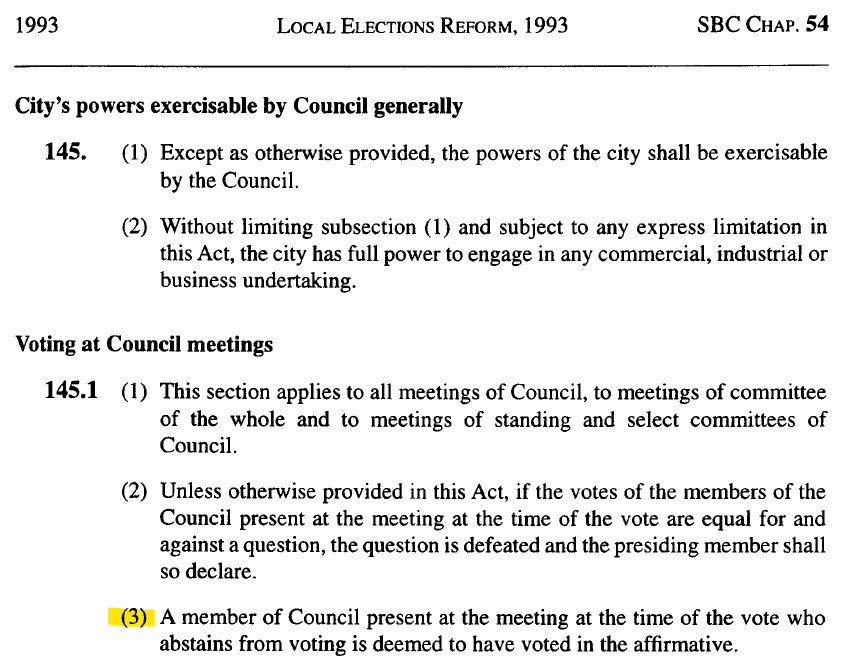

Abstentions at Vancouver City Council: Follow-up
In this blog post, I share some additional details about the abstentions I mention in my op-ed that appeared in the Vancouver Sun on July 21, 2021. In that piece, I argued that “[s]ince an abstention is a vote in favour, when a councillor cannot in good conscience vote in favour of a motion, they should vote in opposition.”
I also said that “I identified 14 motions heard by this council that would not have passed had the abstentions not counted in favour.”
This post provides a slight correction (there were only thirteen, not fourteen) and shows you the specific motions and their effects. They span the gamut from very minor wording changes, to substantive amendments to motions, giving directions to staff on a variety of matters, and waiving presentations from staff.
Many of the motions in which an abstention made a difference to the vote were motions to amend a higher-level motion. The wording of the amendment often (but not always) ended up in the ultimate motion that was carried.
To be clear, the argument in my op-ed would be unchanged even if I discovered no motions in which an abstention tipped the scales. But it is interesting to see the motions where abstentions made a difference to the vote. I also hope this might familiarize people with the Open Data Portal and Council minutes.
Correction
First though: the correction. The Open Data Portal reported that vote 4072 was a motion that carried, despite having more votes in opposition than explicitly in favour. My previously analysis counted this as a motion in which the abstention made a difference to the vote.
However, the minutes for that vote (see p. 12) clearly show this to be a motion that lost. The abstention did not make a difference.
I have sent an email to the Open Data Portal maintainers and they are in the process of correcting the entry.
The thirteen motions
Here, I link to and describe the thirteen motions in which an abstention made a difference to the outcome of a vote. Again, this is just for interest and completeness.
Vote 4096 (Minutes)
This related to an emergency interim zoning policy for Broadway Corridor to UBC. Vote 4096 was on a motion to amend. It changed the text of the ultimate motion. Instead of directing “staff to extend the Broadway Plan interim rezoning policy,” the motion changed the wording to direct staff to “explore the implications of extending” it. This wording made it into the ultimate motion that carried.
Vote 4112 (Minutes)
This related to the same emergency interim zoning policy just discussed. Vote 4112 was on another motion to amend. It added some text to the ultimate motion that directed staff to “consider Affordable Home Ownership specifically in partnerships with BC Housing Affordable Home Ownership program...”. This wording made it into the ultimate motion that carried.
Vote 4430 (Minutes)
This related to the False Creek to Fraser River Blueways. Vote 4430 was on a motion to amend. It changed the wording that asked the Park Board to vote. The wording made it into the ultimate motion that carried.
Vote 4433 (Minutes)
This related to the same False Creek to Fraser River Blueways motion just discussed. Vote 4433 was on a motion to amend. It changed the wording that asked the Park Board to vote. The wording made it into the ultimate motion that carried.
Vote 5035 (Minutes)
This was a motion at the Standing Committee of Council on Policy and Strategic Priorities. They were recommending changes to the Procedure By-law. Vote 5035 was a vote on a motion to set the time limit for “representative speakers” to five minutes. This limit made into the wording that would ultimately carry and be recommended to council.
Vote 5642 (Minutes)
This related to a motion on supporting gender equity and diversity in Vancouver City Council. Vote 5642 was a motion to amend. It changed the wording to “support the volunteer reporting of” diversity. But this was undone in vote 5645 because it didn’t fit gramatically or logically with the rest of the motion’s text.
Vote 5790 (Minutes)
This related to a motion about COVID-19 pandemic impacts. Vote 5790 was a motion to amend. It added direction to staff to “consider specific pay parking exemptions for essential and health care workers...”. This wording made it into the ultimate motion that carried.
Vote 5904 (Minutes)
This related to a motion following a presentation from staff on COVID-19 pandemic impacts. Vote 5904 was a motion to amend. It added direction to staff to “develop a decision making framework for prioritizing operating budget reductions...”. This wording made it into the ultimate motion that carried.
Vote 6068 (Minutes)
Vote 6068 was on a referral motion. It referred the motion entitled “Short Term Landlords—Long Term Protections for Renters and Hotels” (which was about AirBNB-type accomodations) to staff.
Vote 6520 (Minutes)
This related to scheduling. Vote 6520 was a motion to amend. It added wording to direct staff to not schedule public hearings in 2021 earlier than 6pm, Mondays through Thursday and that public hearings should be evenly distributed month to month. This wording made it into the ultimate motion that carried.
Vote 6852 (Minutes)
This related to a staff presentation about a rezoning. Vote 6852 was on a motion to waive the staff presentation. It carried, but was immediately reconsidered in vote 6854 and lost that time, the abstainers from vote 6852 having switched their votes to votes in opposition. The staff presentation was heard.
Vote 6883 (Minutes)
This related to a rezoning application. Vote 6883 was on a motion to amend an amendment. It changed the amendment to try to add wording to request a legal opinion about the language used in some zoning guidelines. Vote 6883 carried and thus successfully amended the amendment. But the amendment itself lost and so this wording did not end up into the ultimate motion that carried.
Vote 7435 (Minutes)
This related to electric kick-scooters. Vote 7435 was on a motion to amend. It added some wording to exclude the application of a part of a by-law. This amendment carried, but was immediately reconsidered and then ruled out of order because it was too similar to something proposed within the previous 365 days. So, the wording associated with vote 7435 did not end up in the ultimate motion that carried.
History and context of the abstention rule [direct link]
I’m also interested in understanding the history and context of the abstention rule. As best as I can tell, it was added to the Municipal Act in 1957 and to the Vancouver Charter in 1993. Variants of the rule have also been part of Vancouver’s Procedure By-law since 1887.
The earliest provincial legislation in which I have been able to locate this rule is Section 164 of the 1957 Municipal Act.
The abstention rule was not added to the Vancouver Charter then. The rule has lived on in various places in the Municipal Act (and now in the Local Government Act and Community Charter) since 1957. But its first appearance in the Vancouver Charter seems to be in 1993, through the Local Elections Reform Act. The Act was largely focused on updating procedures for municipal elections, but it also happened to make some general amendments to the Vancouver Charter. One of those amendments was the introduction of the abstention rule.

When this bill went through the legislature, the discussion centered on the electoral aspects of the bill. The bill’s sponsor, Robin Blencoe, said that the bill was a product of “major consultation with local government and concerned citizens.”
In committee, when discussing the section of the bill (section 62) that introduced the abstention rule, members were focused on other aspects of that section (e.g. quorum, ability to increase council size, the ward system) and did not mention anything about the abstention rule. Reading between the lines of that discussion, and given that the rule would replicate what was already part of Vancouver’s Procedure By-laws at the time, it seems Vancouver was consulted closely on the content of the amendments.
I considered the possibility that the Vancouver Charter incorporated by reference the rule from the Municipal Act. But the Vancouver Charter has been very selective about which portions of the Municipal Act it incorporates by reference and as far as I can tell, did not incorporate the abstention rule by reference.
However, long before provincial legislation dictated the abstention rule for Vancouver in 1993, Vancouver had established its own abstention rule as part of its Procedure By-laws. The very first Procedure By-law, passed in 1887, said:
Every member who should be present in the Council Chamber when a question is put shall vote thereon, unless the Council shall excuse him, or unless he be personally interested in the question, provided such interest is resolvable into a personal pecuniary profit or such as is peculiar to that member, and not in common with the interests of the citizens at-large, and in such case he shall not vote.
The Procedure By-law passed in 1905 says roughly the same thing. The rule was that “[e]very member present at a Council meeting when a question is put shall vote thereon unless the Council shall excuse him or unless he is prohibited by law from voting on such question.” The by-law did not say what would happen if a councillor insisted in not voting. This did not change until 1912, when a new Procedure By-law was passed. It said “if any member persists in refusing to vote for other than the reasons hereinbefore stated, he shall be recorded as voting in the negative on the question before Council.”
This was the abstention rule until 1973, when Council replaced “negative” with “affirmative.”
The abstention rule remained part of the Procedure By-laws until 2002. By 2002, the abstention rule in the Procedure By-law had been made redundant because it was prescribed by provincial legislation. So, it was not renewed as part of the 2002 Procedure By-law.
For a comparative look across the border, Washington publishes a Mayor & Councilmember Handbook. In Washington, state law does not specify how each municipality must treat abstentions. It is open to each municipality in Washington to decide how to treat abstentions. The handbook gives example text for a rule that municipalities can use to treat abstentions as affirmative votes. It also provides one possible justification for such a rule: “If a city does not have a rule, abstentions by one or more councilmembers may make it impossible for final action to be taken on a matter, particularly where a majority vote of the full council is needed.”
In Alberta, the rule is that “[a] councillor attending a council meeting must vote on a matter put to a vote at the meeting unless the councillor is required or permitted to abstain from voting under this or any other enactment.” A councillor in Alberta is required to abstain when they have a conflict of interest or when they are absent for the entire public hearing on a matter. A councillor is permitted to abstain if they were absent from a portion of a public hearing on a matter. If a councillor does not vote on a matter when they are neither required nor permitted to abstain, that disqualifies the councillor from council altogether. That’s much harsher than the rule in BC. In BC, abstentions are deemed affirmative votes. In AB, abstaining when you are required to vote gets you kicked off council!
In Saskatchewan, if a councillor who is not required to abstain abstains, their vote is deemed a negative vote. In Manitoba, I cannot find any rule governing this scenario in provincial legislation or the Winnipeg Procedure By-law. In Ontario, non-votes are deemed negative votes. In Quebec, every councillor is “bound to vote, under penalty of a fine of $10.” In Nova Scotia, failure or refusal to vote is deemed a negative vote. In Prince Edward Island, failure or refusal to vote is deemed a vote in favour. In New Brunswick, there is no provincial legislative direction, but Fredericton and St. John Procedure By-laws both deem non-votes to be affirmative votes. In Newfoundland and Labrador, abstentions are prohibited unless permitted by majority vote of the other councillors.
Almost universally, in municipal councils in Canada, it is not possible to avoid casting a vote in one direction or the other (other than when in a conflict of interest).
In summary, this rule has been prescribed by provincial legislation for at least twenty-eight years in Vancouver and sixty-four years in British Columbia. And as a Procedure By-law, it has existed in various forms since Vancouver’s first Procedure By-law in 1887 (first, merely mandating that each councillor vote; then, deeming non-votes to be negative votes; then, deeming non-votes to be affirmative votes).
Notes
1. ↑ While I don’t promise that what follows shows the absolute earliest uses of this rule, I want to share the earliest appearances that I have been able to find of this rule in the Municipal Act (generally does not apply to Vancouver) and Vancouver Charter (applies only in Vancouver), as well as in Vancouver’s own Procedure By-laws. The Municipal Act evolved into today’s Local Government Act and the Community Charter.
2. ↑ Municipal Act, SBC 1957, c 42. I have tried to rule out the possibility that it was around before 1957. I looked at the text of the 1948 Municipal Clauses Act. It was a revision/consolidation of many of the clauses applying to the workings of municipalities. It contained a clause that is much the same as the eventual 164(1) in the 1957 Act but did not contain anything like 164(2). I then examined all amendments to the Municipal Clauses Act between 1948 and 1957 and could not find that the abstention rule was introduced prior to 1957. I have not done the work necessary to be sure that the abstention rule was not part of some other Act that I just haven’t thought to look in.
3. ↑ Local Elections Reform Act, SBC 1993, c 54, s 62.
4. ↑ See Vancouver Charter, SBC 1953, c 55, s 578 (as consolidated for convenience in 1979). It listed several specific sections of the Municipal Act that applied to Vancouver and said those and only those sections of the Municipal Act applied to Vancouver. The abstention rule was not one of those sections.
5. ↑ City of Vancouver, by-law no 32, Procedure By-law (5 December 1887), s 16.
6. ↑ City of Vancouver, by-law no 516, Procedure By-law (2 October 1905), s 16.
7. ↑ City of Vancouver, by-law no 960, Procedure By-law (21 October 1912), s 16. I want to know what councillor’s obstinance forced them to clarify this rule!
8. ↑ City of Vancouver, by-law no 4705, A By-law to amend By-law No. 3792, being the Procedure By-law (19 June 1973), s 5(b).
9. ↑ City of Vancouver, by-law no 8554, Procedure By-law (8 October 2002).
10. ↑ Association of Washington Cities and Muncipal Research & Services Center of Washington, Mayor & Councilmember Handbook (Olympia, 2019).
11. ↑ Ibid at 43.
12. ↑ Municipal Government Act, RSA 2000, c M-26, s 183.
13. ↑ Ibid, s 172. British Columbia makes a different distinction in terminology and does not lump abstentions together with declarations of conflict.
14. ↑ Ibid, s 184.
15. ↑ Ibid, s 184.
16. ↑ See ibid, s 174(f): “A councillor is disqualified from council if... the councillor does not vote on a matter at a council meeting at which the councillor is present, unless the councillor is required or is permitted to abstain from voting under this or any other enactment.